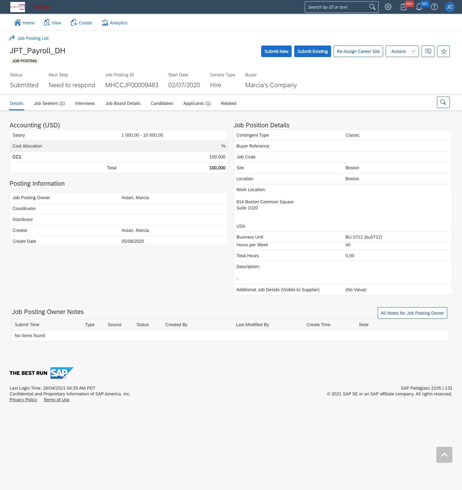
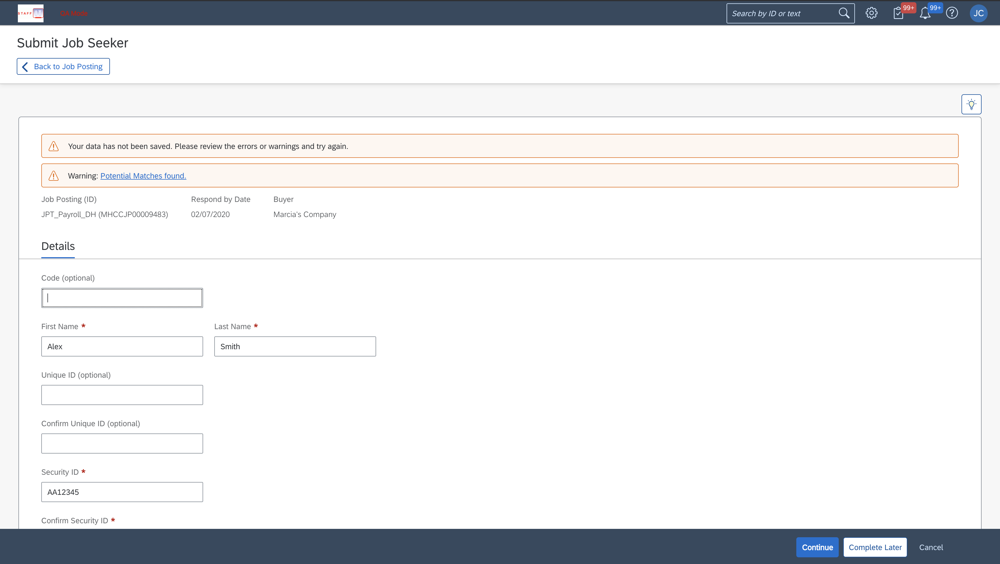

Using SAP Fieldglass, staffing companies can submit workers to job postings. When submitting candidates, they can "Submit New" candidates or "Submit Existing" candidates.
In the system each worker has their own unique workforce record. This record is what gets submitted when a supplier chooses to "Submit Existing." When the supplier chooses to "Submit New" they are creating a new workforce record in the system.
A large number of duplicate workforce records were found in the system. This meant that for some reason suppliers were not using the "Submit Existing" option.
To gain a better understanding of the process of submitting a job seeker to a job posting I mapped out potential scenarios and the flow. This helped me understand why a supplier arrives at the page and also the steps and decisions they make throughout the submission process.


With a more clear picture of how the submission process worked, it was still unclear as to why suppliers were not using the "Submit Existing" button. To me, the two options and their purpose seemed very clear, but I am not the user. So to try and put myself into their shoes, I started formulating a list of questions that would help provide insight and identify the underlying issue.
One strategy I find helpful when it comes to formulating good questions and putting together a story is the Five W's Method (I also like to include how).
For a list of all my questions: Download One Pager
In order to find answers to the questions, I reached out to the Database Mining Team (DBM).
22.01% (US) 19.52% (EU)
4,214,435 (US) 201,545 (EU)
A member of the Professional Services (PS) had valuable feedback that helped answer why "Submit Existing" was not being used.
"Most suppliers are actually clear in their understanding of both actions, but it's faster to submit all candidates using "Submit New" because the search is too difficult." -Sreymoun (Professional Services)
It turns out, suppliers do understand the difference between the actions, but they just find searching for existing candidates (pictured below) too difficult.

After hearing that searching for existing workers was too difficult, I created more questions focused on the search process. I used UserZoom to conduct user interviews hear what real suppliers had to say.
The question that proved most valuable was, "If you could change any one thing regarding your entire process of submitting job seekers to job postings, what would it be? (i.e. if you had a magic wand, what's the one change/addition/removal you’d like to see supported by SAP Fieldglass?)"
"We frequently get a warning after entering a new candidate that a match already exists. However, there is no way to tell why that happens and there is no "view matching candidates..."
This feedback from a suppliers suggested that the functionality that detects when potential matches are being entered in the system is able to identify matches, but only allows you to view them. There is no way to select and submit the potential match instead of the new candidate.

Discovering this issue was key because it meant that the number of duplicate workforce records could be reduced by adding in some way to submit the matches that were discovered.